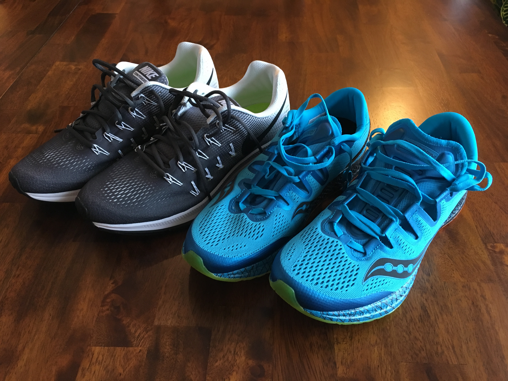

I’m not usually one to take too much stock in New Year’s Resolutions, but this year was different. I made a bunch of them because I want to become a better person in all aspects of my life. One of them is to run 500 or more miles this year. I was going to shoot for 1000, and I may even hit that, but I wanted my goal to be something attainable and make sure I did not get discouraged or give up on it. I wanted to write this sooner, but life always seems to be busy, so at least I am getting this finished before February!
I started running just over a year ago and it has become a big part of my life. I had tried running before, but always hated it. I wasn’t a “real runner” so I felt weird running outside and could not stand the mind-numbing boredom of trotting along on a treadmill for even 30 minutes. Nonetheless, I decided I was going to become a real runner just over a year ago. I bought two cheap pairs of trail running shoes (hopefully I’d have better traction on the snow and ice) off of Amazon and got to it.
I ran for a half mile, walked a bit, ran a quarter mile, walked some more, and kept this up until I had gone two miles. I did this almost every night and it was awful, but I was getting better. Eventually I could run a full two miles in less than 25 minutes. I still hated running, but I was losing weight, so I kept at it. One day at lunch a colleague of mine told me I was doing it all wrong. His exact words were, “You need to go slow to go fast.” That night I went out for another miserable run, but I really took his words to heart and had my best run yet. It was super slow, but I went twice as far as I had ever gone before - four miles! I even felt like I could keep going when I got home.
Over a year has gone by and I have stuck with it. I ran the TC 10 Mile in 1:42:27 this past Fall and am hoping to do a lot more races in the future. I won’t say I love running, but I certainly don’t mind it, and even kind of like it if I’m in the right mood. I am in the best shape I have been in for the past ten years and it feels great. I bought two new pairs of “real” running shoes today from River Valley Running (awesome store!) and am excited to to keep going. I am signed up for the Hot Dash 10 Mile race in March and if my training keeps going well, I hope to do the TC Marathon this Fall.
I am well on my way to achieving my goal of 500 miles this year. I have run 34.2 miles so far, which puts me on track for about 594 miles. I think I should be further along than I am, but it has been a cold January and I’d prefer not to have a frostbitten face. Since I was crunched for time today, I went on a very quick run. 2.3 miles in 17:57, or about a 7:50/mile pace. Pretty good improvement over a year ago! Thanks for reading, and here’s hoping that I rack up a ton of mileage in the next few months and stay injury free!